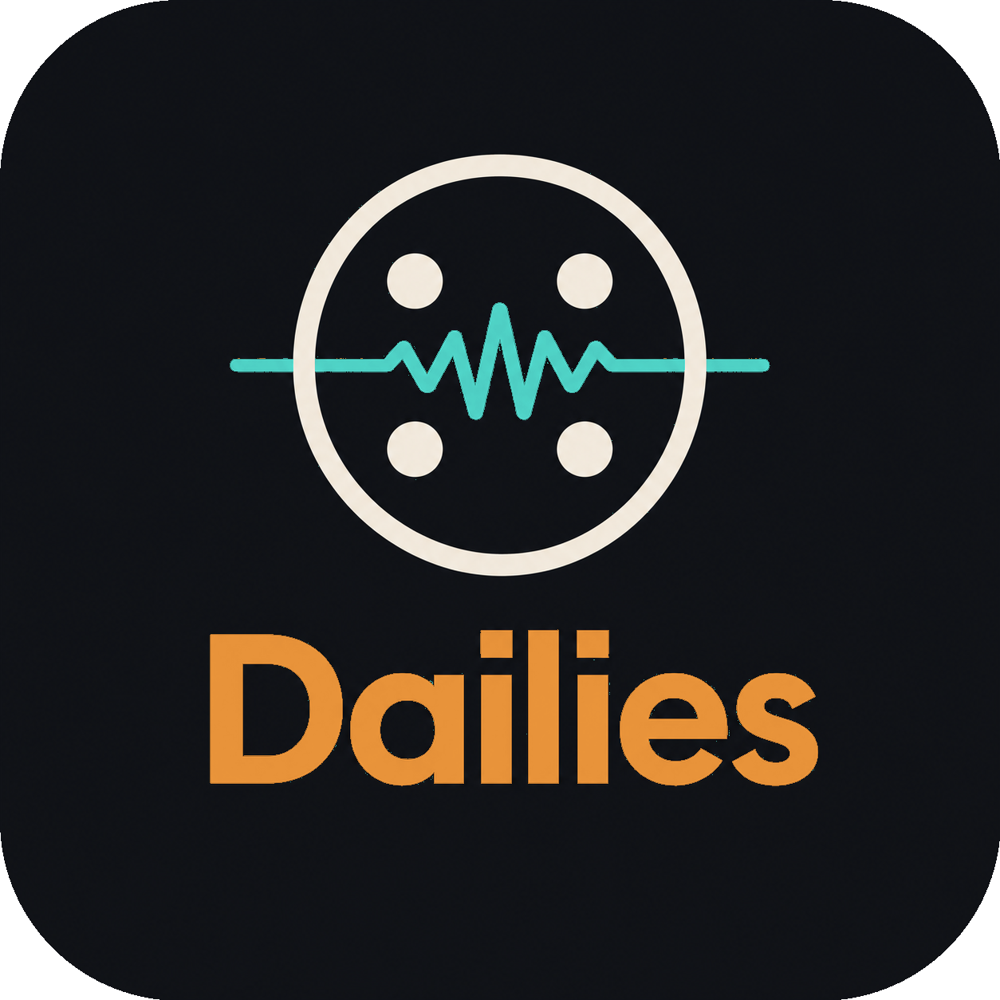

Read the cut
Scene-level analysis maps the shape of the footage, including dialogue, mood, energy, and moments that may be asking for a tighter pace.
Gemini video analysis
Dailies Create accountA product for thoughtful editing
Dailies connects the choices in your edit with audience retention data, then gives your next cut a more deliberate score and direction.

Your audience leaves a trail
A retention curve can show when attention changed. It rarely explains what happened in the cut. Dailies puts those two timelines in the same room.
It identifies the scene, the pacing, and the score around a meaningful shift. It then compares that moment with your recent videos, so the next creative choice begins with context rather than instinct alone.

The edit has a rhythm
A better way to review
Every rough cut has a sequence of decisions: where a scene begins, when a voice enters, and how long an image has room to stay. Dailies makes those decisions visible before they disappear into the final export.
From dailies to direction
Analysis, sound, and audience behaviour belong in the same creative conversation. Dailies keeps each part distinct, then lets the evidence speak across them.
Scene-level analysis maps the shape of the footage, including dialogue, mood, energy, and moments that may be asking for a tighter pace.
Gemini video analysisAn original instrumental direction meets the story where it is, leaving space for dialogue and carrying energy where the sequence turns.
Lyria score directionRecent videos are compared by normalized viewing position. The recommendation names the supporting moments and separates observation from inference.
ClickHouse retention evidenceA report you can question
Dailies does not present correlation as certainty. It shows the shared drop-off position, the nearby cut or music event, and the source videos that informed the recommendation.

Three supporting videos · moderate evidence
The Dailies workflow
Upload a short rough cut and, if useful, a brief outline of the story you are shaping.
Move through timestamped scenes, pacing signals, transcript notes, and a score direction for the sequence.
Use one evidence-backed recommendation to decide what to hold, cut, or carry through the next edit.
Already have a Dailies studio? Sign in

For the cut that comes next
Give the next edit a clearer starting point.
Start with Dailies